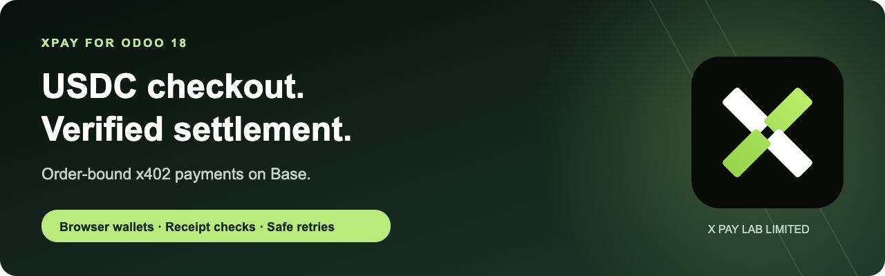

Accept Base USDC through an order-bound x402 payment flow.
Published by X PAY LAB LIMITED, British Virgin Islands company 2221444.
Customers connect an installed Ethereum-compatible browser wallet and authorize the displayed Base USDC payment. No private key or seed phrase is requested.
Payment completion requires a successful Base receipt, the exact merchant transfer and the transaction's authorization nonce. Receipts cannot be reused across payments.
A verified authorization is stored before settlement. Pending checks reuse the same authorization after a timeout, with database locks to serialize attempts.
Odoo 18 · Odoo.sh or self-hosted · HTTPS · Base mainnet USDC.
A merchant API credential with settlement permission and a Base receiving wallet are required. Supports USD and USDC totals; USD totals are quoted 1:1 in USDC. There is no exchange-rate conversion.
The extension is free to download. XPay's stated merchant processing fee is 1%, subject to the merchant agreement. Contact support@x-pay.llc to confirm charges and obtain the applicable agreement before enabling payments.
Odoo Online does not support this custom Python add-on. Test mode does not submit real payments. Complete a real-wallet staging payment before enabling live merchant checkout.
Base mainnet USDC, browser-wallet authorization, x402 requests for existing Odoo transactions, independent receipt checks and background reconciliation every two minutes while Odoo cron runs.
Generic x402 agents must support the documented order-bound nonce extension. The module does not create orders for agents.
No BNB, Solana, KRW, cards, custody, automatic refunds, subscriptions, WalletConnect or currency conversion in this release. An included successful receipt is required; finalized-chain guarantees are not claimed. Permanently failed or changed payments require merchant review.
After merchant configuration and customer authorization, the server sends public payment details, the signature and transaction resource metadata to https://facilitator-xpay.llc/verify and /settle. The merchant credential is sent only to that facilitator. The Base public RPC, https://mainnet.base.org, receives public chain and receipt requests. These services also receive the merchant server's IP address.
This module does not transmit customer names, emails, billing/shipping addresses or private wallet keys. Receipts are retained for accounting; signed authorizations are retained until confirmation to allow safe rechecks. Protect the database, backups and private checkout tokens. No remote executable code or usage analytics is loaded.
XPay privacy and terms: https://x-pay.llc/legal/ · Base terms: https://docs.base.org/terms-of-service · Base privacy: https://docs.base.org/privacy-policy
support@x-pay.llc · https://x-pay.llc/
Independent integration; no endorsement by Odoo, Circle, Coinbase or Base is implied. Unrelated to Nexi XPay, xpayeg and other similarly named payment services.